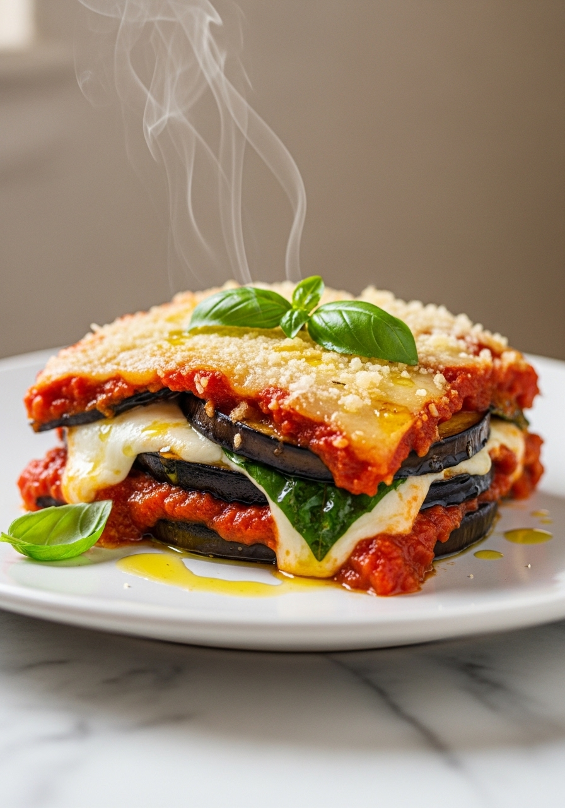
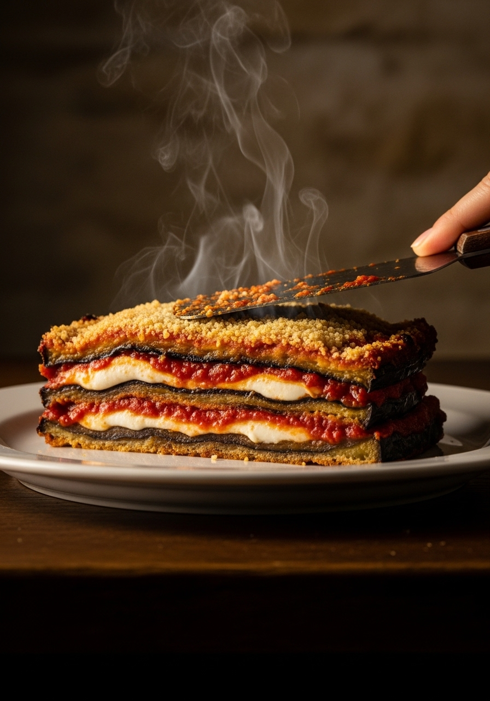

La parmigiana di melanzane è uno dei piatti più amati della cucina italiana nel mondo. La versione napoletana — quella originale e più autentica — usa melanzane fritte nell'olio (non grigliate, non al forno), sugo di pomodoro San Marzano, fior di latte o mozzarella di bufala, e Parmigiano Reggiano. Il segreto non è nella ricetta ma in due operazioni spesso saltate: la salatura delle melanzane per eliminare l'acqua in eccesso, e la frittura in abbondante olio. La parmigiana è un piatto d'estate, di pazienza e di amore.

NapoletanaNonostante il nome, la parmigiana di melanzane non viene da Parma. Le origini sono contese tra Napoli e la Sicilia. La parola 'parmigiana' potrebbe derivare dal dialetto siciliano 'parmiciana' (le liste di legno delle persiane) per la disposizione a strati delle melanzane. Il Parmigiano nel nome è arrivato dopo, come ingrediente aggiunto nei secoli. La versione napoletana è considerata la più autentica: con melanzane fritte, sugo di San Marzano, fior di latte e — nella versione più tradizionale — le uova sode a fette come ingrediente aggiuntivo che aggiunge consistenza agli strati.
La versione napoletana tradizionale usa il fior di latte perché fonde meglio e non rilascia troppa acqua. La mozzarella di bufala è più saporita ma molto acquosa — va sgocciolata per ore. In Sicilia si usa spesso il caciocavallo stagionato. La parmigiana 'fritta' (senza forno, strati assemblati ancora caldi e serviti a temperatura ambiente) è un'altra variante napoletana popolare. La versione al forno è più diffusa perché più pratica. La scelta dipende dal tempo, dalla tradizione familiare e dal gusto personale — tutte le versioni sono autentiche.
Ingredienti
Procedimento

La parmigiana di melanzane si conserva in frigorifero per 3-4 giorni. Il sapore migliora notevolmente il giorno dopo: i sapori si amalgamano, gli strati si compattano e si taglia perfettamente. Si serve fredda, a temperatura ambiente o riscaldata in forno a 160°C per 15 minuti. Non congela bene: le melanzane diventano mollicce. La parmigiana avanzata è ottima come ripieno per una piadina, come condimento per la pasta (schiacci gli strati con una forchetta e ottieni un condimento straordinario), o come farcitura per calzoni e pizze al forno.
Sì — è un passaggio essenziale. La salatura elimina l'acqua in eccesso (che renderebbe la parmigiana liquida) e l'amaro naturale. Le melanzane moderne hanno meno amaro delle varietà antiche, ma la salatura serve ancora per eliminare l'acqua. Senza salatura la parmigiana finisce in un lago di liquido durante la cottura in forno.
Sì per una versione più leggera. Le melanzane grigliate assorbono meno olio e la parmigiana risulta meno ricca. Ma la versione tradizionale napoletana è con le melanzane fritte: la frittura crea una barriera che impedisce alle melanzane di cedere liquidi in forno. Il sapore è nettamente diverso e superiore.
Nella versione napoletana originale sì — le uova sode a fette sono un ingrediente tradizionale della parmigiana campana. Non compaiono nella versione siciliana o nelle versioni del Nord Italia. Se non ti piacciono, omettile: la parmigiana resta ottima senza.
Le cause principali sono: melanzane non salate o non asciugate, mozzarella troppo acquosa non sgocciolata, sugo troppo liquido, o tempo in forno insufficiente. Soluzione: sala sempre le melanzane, asciuga la mozzarella su carta per 30 minuti, usa un sugo denso, e lascia riposare la parmigiana 20-30 minuti dopo il forno prima di tagliarla.
Sì — nella versione senza uova sode è completamente vegetariana (non vegana per mozzarella e Parmigiano). Con le uova sode è ovo-vegetariana. Per una versione vegana: usa mozzarella di soia e lievito alimentare in scaglie al posto del Parmigiano — il risultato è sorprendentemente buono.